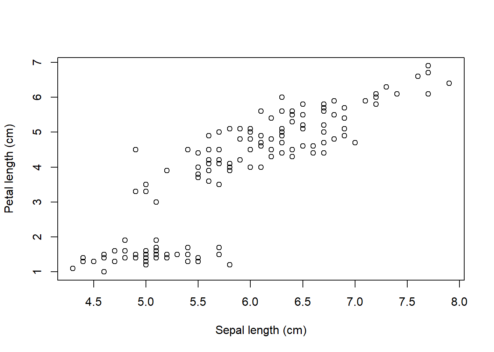

# Show the first six rows of a built-in dataset
head(iris)
# See the datasets available in your R session
data()2 Workflow & R Projects
Build a routine you can use every time you work in R
R PROJECTS · SCRIPTS · QUARTO
Build Habits That Last
Good analysis is easier when your files and steps have a clear home. Learn how R Projects, scripts, and Quarto documents work together to make your work organized, repeatable, and easier to share.
NoteLearning objectives
By the end of this lesson, you should be able to:
- Create and reopen an R Project.
- Create, run, and save an R script (
.R). - Create and render a Quarto document (
.qmd). - Follow a simple routine for organizing your work.
2.1 Why workflow matters
Every good analyst creates a pattern for how they work. It doesn’t have to be complicated! A consistent routine helps with reproducibility, jogs your memory when you return to an old project, and saves you a lot of time looking for files.
In this lecture, we’ll focus on three tools that work together: R Projects, R scripts, and Quarto documents.
2.2 Start with an R Project
The easiest way to stay organized is to use R Projects in RStudio. Think of a project as a home for everything related to one assignment, study, or analysis. When you open its .Rproj file, RStudio opens that project and uses its folder as the working directory.
2.2.1 Create your project
- In RStudio, select File > New Project.
- Choose New Directory if you want a new folder, or Existing Directory if you already have one.
- Give the project a name, such as
my_first_project, and choose where to save it. - Click Create Project.
Pay attention to the Files pane. You should now see the files in your project folder. This is going to save you a lot of headaches later!
NoteA simple project folder
my_first_project/
├── my_first_project.Rproj
├── data/
├── scripts/
├── figures/
└── report.qmdYou don’t have to create every folder right now. The idea is to keep related files together. The .Rproj file is created by RStudio; the other folders and files are examples you can add as needed.
ImportantOne habit worth learning now
Use relative file paths inside your project, such as data/survey.csv, instead of paths tied to one computer (such as C:/Users/...). A project helps R find files, but it does not automatically save every output into the right subfolder; you still choose filenames and locations when saving.
2.3 Built-in datasets: a bonus
Some packages also include datasets. R itself comes with several useful datasets that let us practice without importing files. We have already used several of them.
NoteRemember
Not every dataset is a data frame, and you don’t need to memorize the available datasets. We’ll use a few built-in examples as we learn new skills.
2.4 Create an R script
An R script is where you write and save instructions for R. Scripts are plain-text files ending in .R. Unlike typing commands only in the Console, saving your code in a script means you can come back and run it again.
- Select File > New File > R Script.
- Type the code below into your script.
- Save it as
scripts/01_first_script.Rusing File > Save As. - Run a line with Ctrl + Enter (Windows) or Cmd + Enter (Mac).
2.4.1 Get into a routine
Every R script reads from top to bottom, like a book. I like to organize my scripts in roughly the same order each time:
- Title and comments — What is this script for?
- Packages — What tools do I need?
- Data — What am I working with?
- Data preparation — What needs to be cleaned or changed?
- Analysis and figures — What do I want to learn or show?
You won’t need all five parts every time, but this is a good habit to develop.
Here is a short example you can copy into your new script:
# My first R script
# Purpose: Explore the built-in iris dataset
# 1. Packages
# No extra packages needed for this example
# 2. Data
flowers <- iris
# 3. Look at the data
head(flowers) Sepal.Length Sepal.Width Petal.Length Petal.Width Species
1 5.1 3.5 1.4 0.2 setosa
2 4.9 3.0 1.4 0.2 setosa
3 4.7 3.2 1.3 0.2 setosa
4 4.6 3.1 1.5 0.2 setosa
5 5.0 3.6 1.4 0.2 setosa
6 5.4 3.9 1.7 0.4 setosa# 4. A simple analysis
mean(flowers$Sepal.Length)[1] 5.843333# 5. A quick figure
plot(flowers$Sepal.Length, flowers$Petal.Length,
xlab = "Sepal length (cm)",
ylab = "Petal length (cm)")
TipRead this as…
“Create an object called flowers using the built-in iris data. Show the first few rows, calculate the average sepal length, and then make a plot comparing sepal length and petal length.”
2.5 Create a Quarto document
An R script is great for running an analysis. But what if you want to explain what you did and show your code, results, and figures together? That’s where Quarto comes in.
A Quarto document (.qmd) combines writing and R code. You can then render it into a finished HTML report. The best part? You can build most of the document using RStudio’s Visual editor, much like a word processor.
2.5.1 Create your first document
- In your R Project, choose File > New File > Quarto Document (or use the New File button).
- Enter a title, keep HTML selected, and choose Create Empty Document if that option appears.
- Save the document as
report.qmdin your project folder. - At the top of the editor, select Visual rather than Source. We’ll use Visual mode for this course.
TipWhy Visual mode?
Visual mode lets you insert headings, lists, links, tables, and R code chunks using menus. You can focus on communicating your ideas instead of remembering formatting symbols. The underlying .qmd file is still editable as text if you need that later. You can always toggle to the Source format to see what R is doing behind the scenes.
2.5.2 Add a heading and a short explanation
Click below the document’s title information. Type My First Analysis, select that text, and use the heading menu to make it a Heading 1. Under the heading, type:
Let’s take a quick look at the iris dataset. This is a built-in R dataset containing measurements of flowers.
Notice that you’re writing regular sentences, not R code. That’s one of the strengths of Quarto: you can explain your analysis right alongside the results.
2.5.3 Insert an R code chunk
Now we’ll add some actual R code.
- Put your cursor on a new line below your paragraph.
- Choose Insert > Code Chunk > R from the editor toolbar or menu. Alternatively, type
/and select R Code Chunk from the menu (typing/rcan help narrow the choices). - In the new chunk, enter the following code:
head(iris) Sepal.Length Sepal.Width Petal.Length Petal.Width Species
1 5.1 3.5 1.4 0.2 setosa
2 4.9 3.0 1.4 0.2 setosa
3 4.7 3.2 1.3 0.2 setosa
4 4.6 3.1 1.5 0.2 setosa
5 5.0 3.6 1.4 0.2 setosa
6 5.4 3.9 1.7 0.4 setosamean(iris$Sepal.Length)[1] 5.843333- Use the chunk’s Run button to execute the code and examine the results.
TipRead this as…
“Show me the first few rows of the iris dataset, and then calculate the average sepal length.”
NoteWhat is a code chunk?
Think of a code chunk as a small space inside your report where R code can run. The rest of your document can contain headings, explanations, and other content. Visual mode inserts the chunk structure for you.
2.5.4 Run versus Render
Running a chunk executes that piece of code so you can check it as you work. Rendering builds the whole document into a finished report.
Click Render at the top of RStudio. Quarto will run the executable chunks and produce an HTML file in your project folder, alongside report.qmd. Open it and look for your heading, paragraph, code, and results.
ImportantOne habit worth learning now
Rendering generally runs your Quarto code in a fresh R session. If your report uses an object such as flowers, include the code that creates flowers inside the Quarto document. Don’t assume that an object you created earlier in the Console will be available when you render.
2.5.5 A few options you’ll see later
There are lots of useful Quarto options. For now, I want you to recognize just a few, not memorize them. For this course, I will supply homework assignments with YAML headers that are ready to roll.
| Option | What it does |
|---|---|
title and author |
Identify your document. |
format: html |
Creates a webpage-style report. |
toc: true |
Adds a table of contents. |
echo: false |
Runs a chunk but hides its code in the report. |
eval: false |
Shows code without running it during rendering. |
TipTry a chunk option
In Visual mode, click the gear/options control for your R code chunk, if available, and look for the option that controls whether code is displayed in the finished document. You can also switch to Source mode later to see the corresponding #| echo: false setting. For today, leave your code visible so you can see both the instructions and the results.
2.6 Which file should I use?
| Tool | File | Use it when you want to… |
|---|---|---|
| R Project | .Rproj |
Keep an entire assignment or analysis organized. |
| R script | .R |
Write, run, and save code. |
| Quarto document | .qmd |
Combine explanation, code, results, and figures in a report. |
| Rendered report | .html |
Share or view the finished Quarto output. |
These tools are not competing with one another. You can—and often should—use an R Project containing both scripts and Quarto documents.
2.7 Your repeatable R routine
Here’s the pattern I’d like you to practice whenever you start an assignment:
- Open your R Project. Make sure you’re in the right folder.
- Open or create your
.Ror.qmdfile. Don’t rely on the Console to remember your work. - Write code in a logical order. Add short comments to explain your decisions.
- Run your code and check the results. Fix errors as you go.
- Save your source file. If you’re using Quarto, render it too.
- Reopen and rerun later. Can you reproduce your results without hunting for files or missing objects?
TipThe big idea
Project = where your work lives. Script = instructions for R. Quarto = a report that explains and shows your work.
2.8 Try it yourself
Before you leave, see if you can complete this short exercise:
Review questions: What is the difference between an .R file and a .qmd file? Why is it helpful to open the .Rproj file before starting your work?
NoteKeep learning
2.4.2 Comments are your friend
A line starting with
#is a comment. R ignores it when running code. Comments help explain what you did and why—especially when you return to your work weeks later.Script: Write code you want to keep, edit, or rerun.
Console: Run commands and see results. It’s great for quick experiments, but it isn’t a substitute for a saved script.